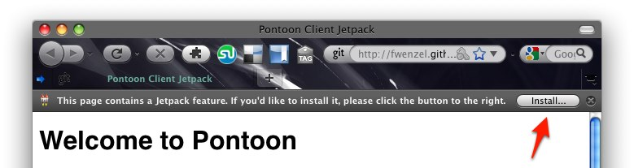

This is a proof-of-concept implementation of an in-place web localization tool.
Some links to get you started:
If you want to install the Pontoon client jetpack, you need to install the Mozilla Jetpack add-on, then revisit this site and click on the install button in the top right corner of your browser window:
